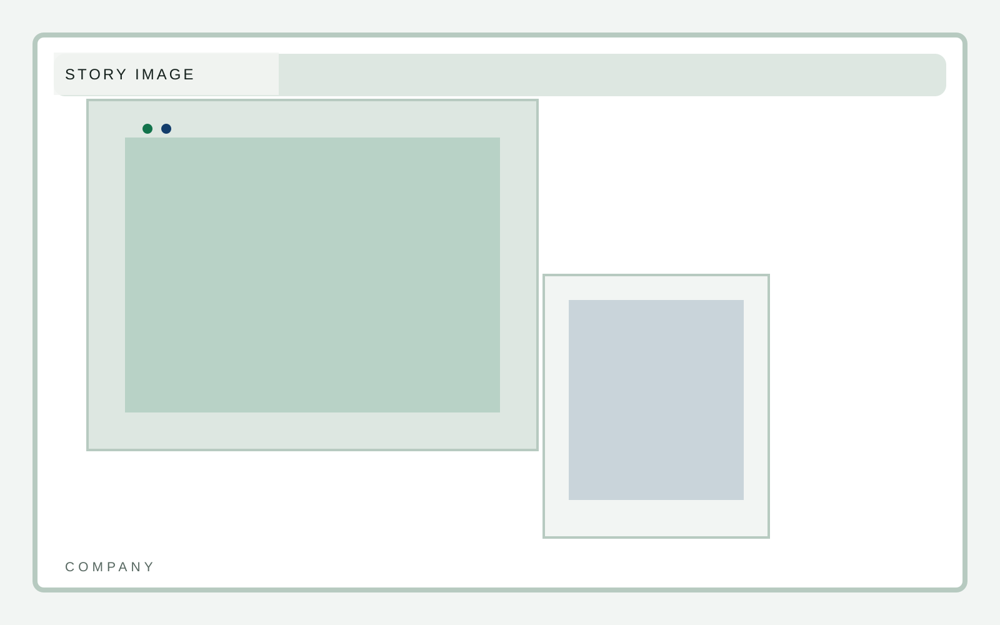
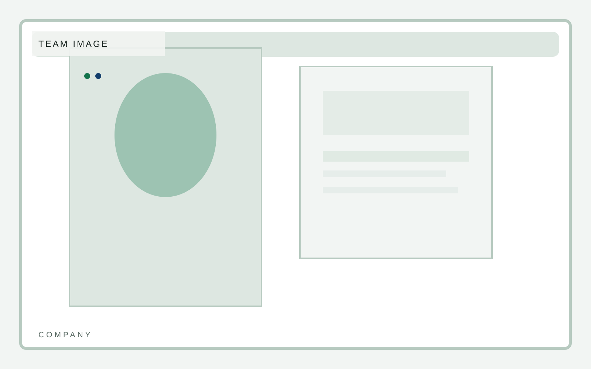

Activation
Fast team rollout
B2B software
A software marketing template that puts product UI, workflow clarity, and proof structure ahead of the usual startup chrome. Company tone should support product trust, not distract from it.
B2B software
Company story should support product trust. Keep it compact and operational.

B2B software
Team framing should suggest product maturity rather than startup personality theater.
Managing Partner
Operating Principal
Portfolio Strategy

B2B software
Principles should match the interface language: clear, narrow, and disciplined.